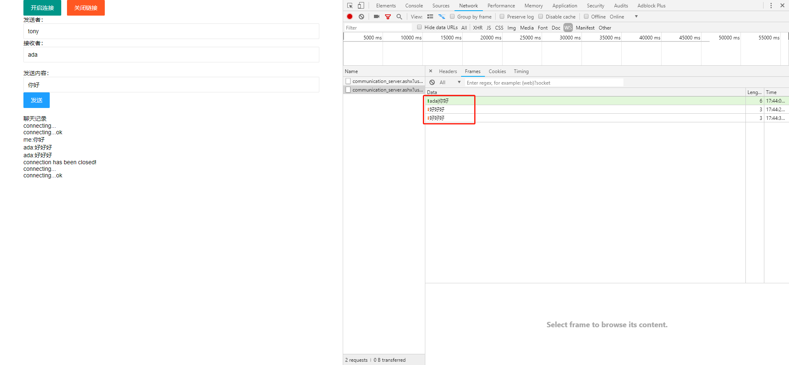
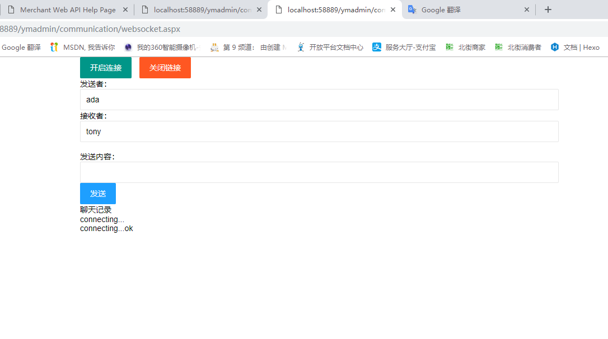
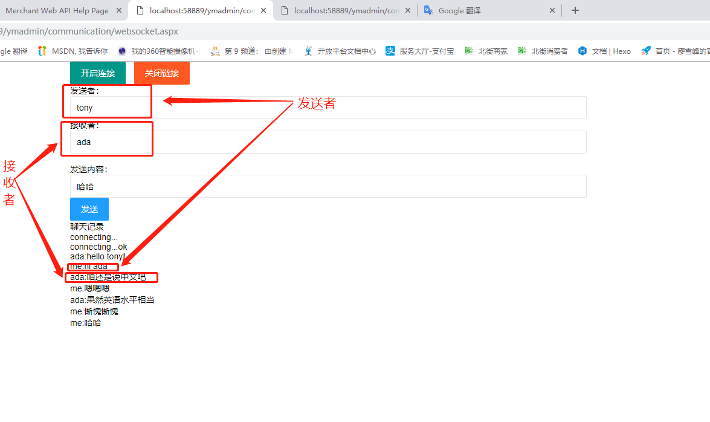
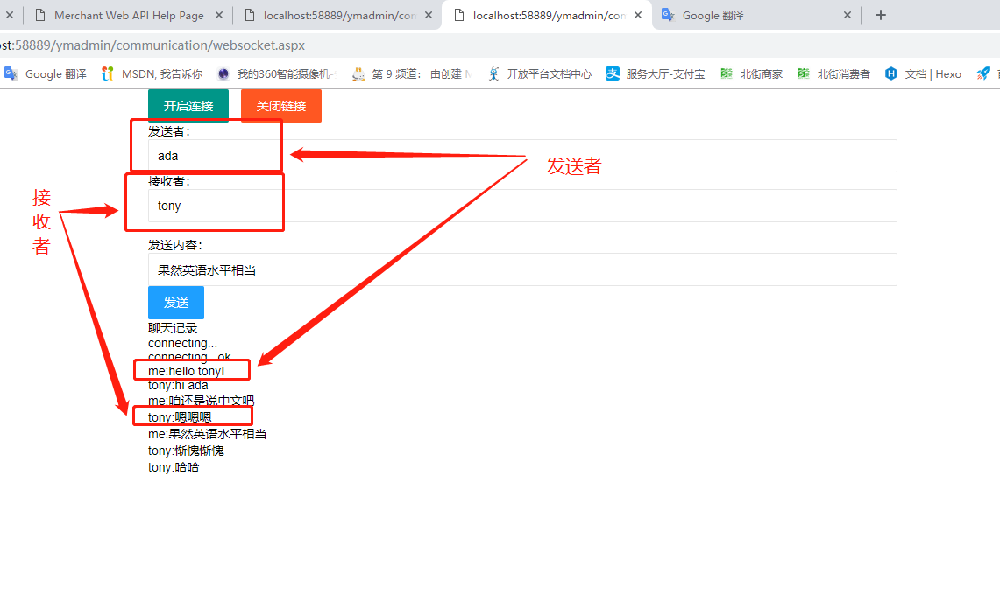

前些天，跟大家分享了一个socket的小工具，主要还是用来提高办公效率，今天在给大家分享一个基于WebSocket的聊天小程序（不是微信小程序哈哈），（就像电影《寒战2》里郭富城和梁家辉争吵一样，你一句我一句，俩人可以随便说），注意，是可以同时说哦，a->b,b->a
还是先简单介绍下WebSocket吧，尽管已经有很多大牛们在各种平台上介绍过它了，我还是想说点我自己的看法
首先，什么是WebSocket？
答案是：WebSocket 是一种网络通信协议，RFC6455 定义了它的通信标准， 是 HTML5 开始提供的一种在单个 TCP 连接上进行全双工通讯的协议。
靠，这不等于没说？什么叫全双工通信协议？
简单来说呢，全双工通信协议，顾名思义，就是我能给你说话的同时你也能跟我说话，咱俩平级，且可以插嘴
此外，还有半双工通信
半双工通信，是指数据传输指可以在一个信号载体的两个方向上传输，但是不能同时传输，平级，但不能插嘴，你说完我再说~
那么还有一种单工通信
就是在只允许A向B传送信息，而B不能向A传送,（军人的命令就是服从，不许反驳）
好了通讯说明白了，再来继续说WebSocket。
WebSocket应该说是顺应历史潮流诞生的一个东东，在没有WebSocket的时代，大家只得借助http协议来和服务器进行数据交互，HTTP 而协议是一种无状态的、无连接的、单向的应用层协议。它采用了请求（request）/响应(response)模型。
通信请求只能由客户端发起，服务端对请求做出应答处理。这就使得那些需要频繁更新实时数据的应用比较难受了，因为他老得去请求服务器，比如ajax轮询的方式，效率比较低，资源浪费率大；
那WebSocket就是为了解决这个问题诞生的
WebSocket 连接允许客户端和服务器之间进行全双工通信，以便任一方都可以通过建立的连接将数据推送到另一端。WebSocket 只需要建立一次连接，就可以一直保持连接状态。这相比于轮询方式的不停建立连接显然效率要大大提高。
好了，关于WebSocket的介绍就到这了，我说的也是借鉴了别人的博客，加以自己的一些理解，属于冰山一角，大家有兴趣可以去百度，去Google，在深入了解下。
接下来，咱还是说说怎么聊天吧
在这有个前提，因为我是用.net的技术来做的，对web服务器有一点要求，iis的版本必须在8.0以上才可以哦！8.0以下的版本不支持WebSocket协议
因为WebSocket是在客户端是HTML5提供支持的，所以绝大部分浏览器都可以做WebSocket的调试工作

那我们的程序代码其实也很简单，客户端，只需要简单的几步操作就可以了（可以先大概了解下WebSocket的属性 http://www.runoob.com/html/html5-WebSocket.html ），
我就直接上代码了昂
1 | <html> |
服务端代码我是用.net的一般处理程序（ashx文件）来做的，微软官方的解释是这种方式效率比较高，用webapi的方式也可以，我试了试，还没试成功。。。，就先分享这种方式吧
1 | /// <summary> |
实现之后的效果如下


